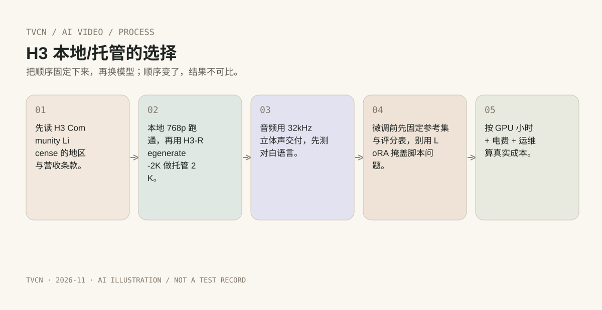
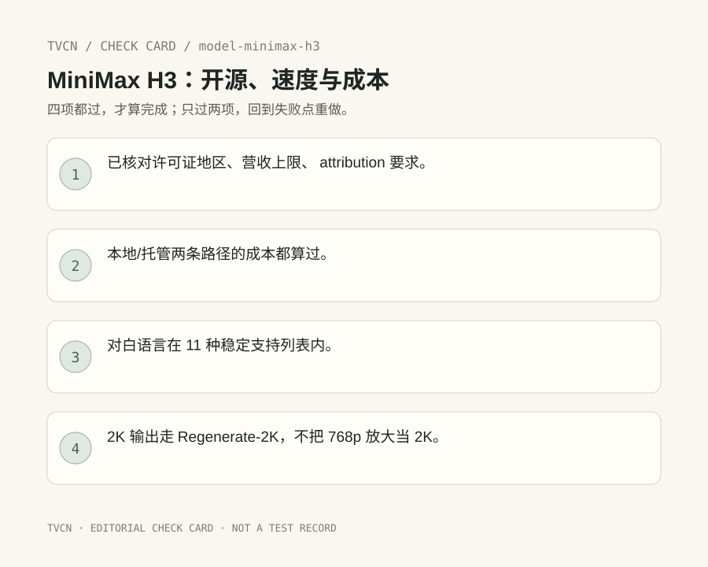
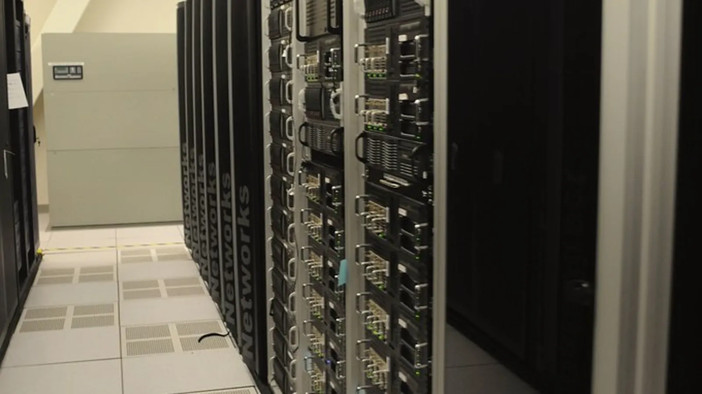
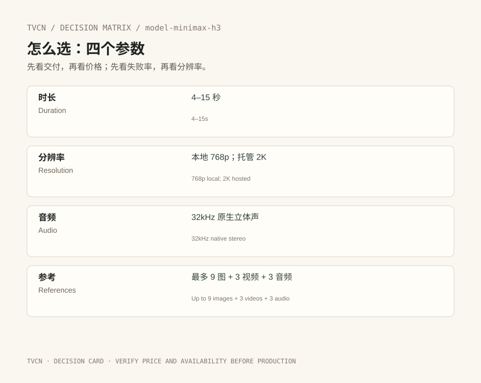

适用与不适用 / Fit and no-fit
- 需要本地跑、可微调/LoRA、数据不出内网的团队。
Teams needing local inference, fine-tuning/LoRA and data staying on-prem. - 4–15 秒、带原生立体声、预算低于闭源 API 的项目。
4–15s projects with native stereo and a budget below closed APIs. - 不适用：美国/欧盟/英国/韩国主体、必须 4K、必须零运维。
Not for: US/EU/UK/South Korea entities, mandatory 4K, zero-ops teams.
怎么做 / Do this
- 先读 H3 Community License 的地区与营收条款。
Read the H3 Community License for region and revenue terms. - 本地 768p 跑通，再用 H3-Regenerate-2K 做托管 2K。
Run 768p locally, then use H3-Regenerate-2K for hosted 2K. - 音频用 32kHz 立体声交付，先测对白语言。
Deliver 32kHz stereo; test dialogue language first. - 微调前先固定参考集与评分表，别用 LoRA 掩盖脚本问题。
Lock references and scoring before fine-tuning; do not use LoRA to hide script issues. - 按 GPU 小时 + 电费 + 运维算真实成本。
Cost by GPU hours + power + ops, not API list price.
参数与判断 / Parameters
| 项目 / Item | 本页口径 / This page |
|---|---|
| 时长 Duration | 4–15 秒 4–15s |
| 分辨率 Resolution | 本地 768p；托管 2K 768p local; 2K hosted |
| 音频 Audio | 32kHz 原生立体声 32kHz native stereo |
| 参考 References | 最多 9 图 + 3 视频 + 3 音频 Up to 9 images + 3 videos + 3 audio |
| 许可 License | H3 Community License；排除 US/EU/UK/South Korea H3 Community License; excludes US/EU/UK/South Korea |
| 价格 Price | API 约 $0.08/秒 768p、$0.13/秒 2K API about $0.08/s 768p, $0.13/s 2K |
DIAGRAM / PROCESS
H3 本地/托管的选择

别踩 / Avoid
- 只看“开源”不看地区条款；许可证排除的区域不能商用。
Reading “open” but not the region clause; excluded regions cannot use commercially. - 用 33B dense 模型估显存；量化后仍需大显存/多卡。
Estimating VRAM from a 33B dense model; quantized still needs large or multi-GPU. - 本地 768p 直接当 2K 交付；2K 是托管重生成。
Treating local 768p as 2K delivery; 2K is a hosted regenerate.
继续往下 / Go deeper
H3 的卖点是“把闭源能力搬到本地”，但本地不是免费：33B dense 参数、视频+音频双 VAE、长序列解码，对显存和并行要求都高。先用托管 API 验证效果，再决定是否买卡，比先买卡再找场景更稳。
它的许可证不是标准 Apache：地区排除、营收门槛、attribution 都会影响商用。把许可证审查放在采购第一步；如果团队在排除区域，直接换 Wan 2.2、LTX 或闭源 API，不要等签完合同才发现。
验收 / Checks
- 已核对许可证地区、营收上限、 attribution 要求。
License region, revenue cap and attribution checked. - 本地/托管两条路径的成本都算过。
Both local and hosted costs calculated. - 对白语言在 11 种稳定支持列表内。
Dialogue language is in the 11 stable languages. - 2K 输出走 Regenerate-2K，不把 768p 放大当 2K。
2K uses Regenerate-2K, not a 768p upscale.
VISUAL BOARD / 图版04



图片说明：本页封面、图解与步骤图是编辑示意或结构图，不是本页实测照片，也不能当作器材测试证据；AI 辅助生成的图会在图注标出。判断器材或画面，以正文的测试条件与现场记录为准。